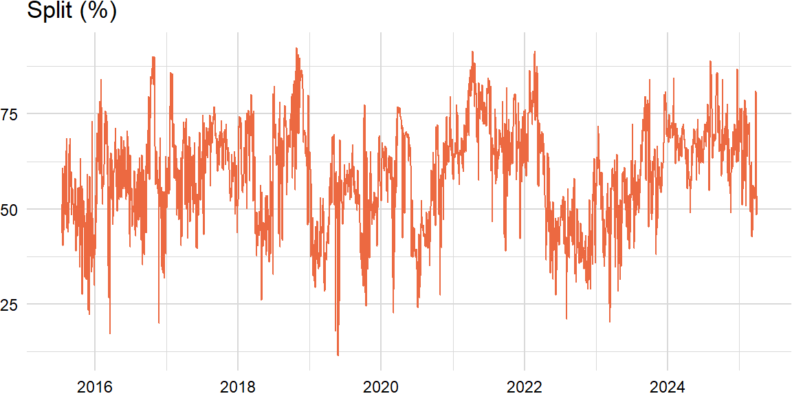

library(zoo)
load("../crowds-r/score_df.rda")Preprocessing
n_ahead <- 20 * 3
width <- 20 * 3cols <- c("date", "quantile")
weight_df <- reshape(score_df[ , c(cols, "weight")], timevar = "quantile",
idvar = "date", direction = "wide")
performance_df <- reshape(score_df[ , c(cols, "performance")], timevar = "quantile",
idvar = "date", direction = "wide")
x_df <- merge(weight_df, performance_df, by = "date")x_xts <- zoo(x_df[ , -1], x_df[ , 1])
y_xts <- lag(x_xts[ , "weight.Q1"], k = n_ahead, na.pad = TRUE)
train_xts <- merge(y_xts, x_xts)Standardization
library(roll)score_xts <- roll_scale(train_xts, nrow(train_xts), min_obs = 1)
score_idx <- complete.cases(y_xts) & complete.cases(score_xts)
cov_xts <- roll_cov(score_xts, width = nrow(score_xts), min_obs = 1)
cov_idx <- apply(cov_xts, 3, function(i) all(!is.na(i)))Distance
train_idx <- which(score_idx & cov_idx)
target_z_xts <- tail(score_xts[ , -1], length(train_idx))
target_x_xts <- tail(x_xts, length(train_idx))
score_xts <- score_xts[train_idx, -1]
cov_xts <- cov_xts[-1, -1, train_idx]Prediction
library(CVXR)min_rss_optim <- function(x, y) {
x <- as.matrix(x)
y <- as.numeric(y)
params <- Variable(ncol(x))
obj <- Minimize(sum_squares(y - x %*% params))
cons <- list(sum(params) == 1, params >= 0, params <= 1)
prob <- Problem(obj, cons)
result <- solve(prob)$getValue(params)
return(result)
}Backtest
n_z <- length(train_idx)
predict_ls <- list()
for (z in 1:n_z) {
# distance
target_z <- coredata(target_z_xts[z, ])
dist_ls <- list()
for (i in 1:z) {
x_i <- coredata(score_xts[i, ])
sigma <- cov_xts[, , i]
dist <- tryCatch({
sqrt((x_i - target_z) %*% solve(sigma) %*% t(x_i - target_z))
}, error = function(e) {
NA
})
dist_ls <- append(dist_ls, list(dist))
}
dist <- do.call(rbind, dist_ls)
dist_idx <- dist <= quantile(dist, 0.05, na.rm = TRUE)
test_idx <- dist_idx
x_test <- x_xts[train_idx][test_idx]
# similarity
n_x <- nrow(x_test)
sign_ls <- list()
target_x <- coredata(target_x_xts[z, ])
if (n_x > 0) {
for (i in 1:n_x) {
x_i <- coredata(x_test[i, ])
sign <- tryCatch({
sum(sign(x_i) == sign(target_x), na.rm = TRUE)
}, error = function(e) {
NA
})
sign_ls <- append(sign_ls, list(sign))
}
}
sign <- do.call(rbind, sign_ls)
sign_idx <- sign == ncol(score_xts)
# prediction
if (sum(sign_idx) > 0) {
x_subset <- x_test[sign_idx]
y_subset <- y_xts[train_idx][test_idx][sign_idx]
weights <- min_rss_optim(x_subset, y_subset)
predict <- target_x %*% weights # sum(target_x * weights)
} else {
predict <- NA
}
predict_ls <- append(predict_ls, list(predict))
}predict <- do.call(rbind, predict_ls)
predict_xts <- zoo(predict, index(target_x_xts))